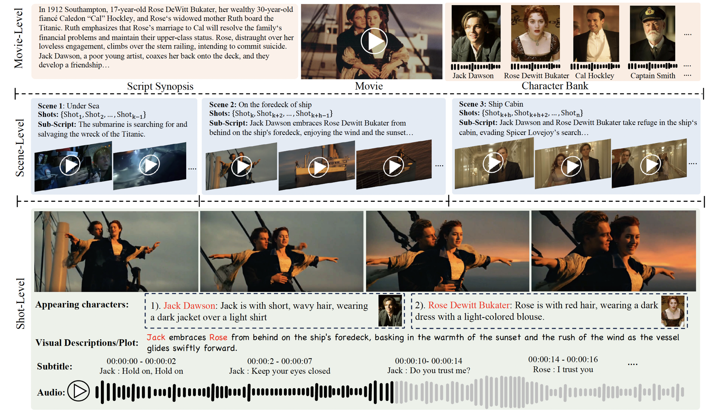
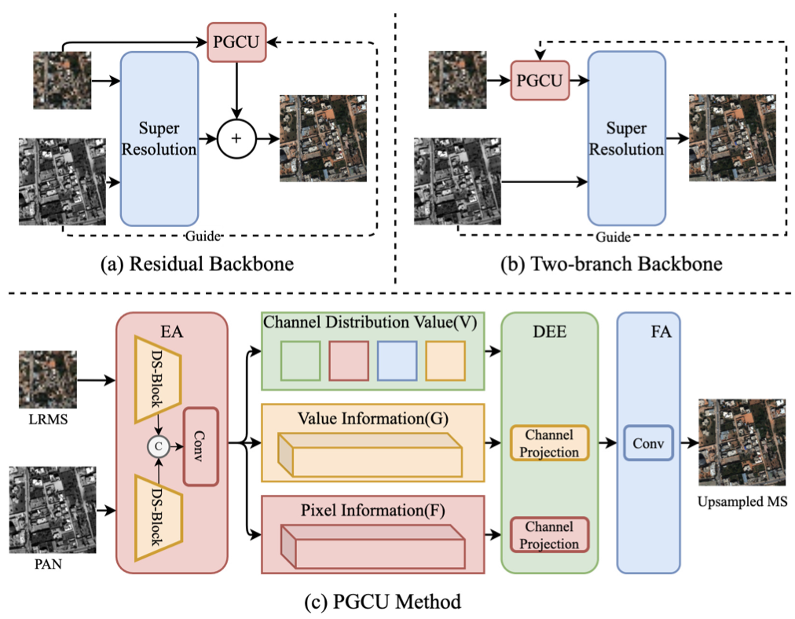

|
Zeyu Zhu I am an PhD student at Showlab supervised by Prof. Mike Shou in National University of Singapore. And I am very fortunate to be advised by Prof. Xiangyong Cao and Prof. Deyu Meng throughout my undergraduate years. |
ResearchI'm interested in computer vision and generative AI. |
|  |
MovieBench: A Hierarchical Movie Level Dataset for Long Video Generation
Weijia Wu, Mingyu Liu, Zeyu Zhu, Xi Xia, Haoen Feng, Wen Wang, Kevin Qinghong Lin, Chunhua Shen, Mike Zheng Shou Arixv, 2024 page / arxiv We propose a hierarchical movie level dataset for long video generation. |

|
Unsupervised Hyperspectral Pansharpening via Low-rank Diffusion Model
Xiangyu Rui, Xiangyong Cao, Li Pang, Zeyu Zhu, Zongsheng Lyu, DeyuMeng Information Fusion(IF=18.6), 2024 github / arxiv We propose a low-rank diffusion model for hyperspectral pansharpening by leveraging the power of the pre-trained deep diffusion model and better generalization ability of Bayesian methods. |
|  |
Probability-based Global Cross-modal Upsampling for Pansharpening
Zeyu Zhu, Xiangyong Cao, Man Zhou, Junhao Huang, Deyu Meng The IEEE / CVF Computer Vision and Pattern Recognition Conference (CVPR), 2023 github / arxiv We propose a novel probability-based global cross-modal upsampling (PGCU) method for pan-sharpening to to exploit global information of the LRMS image as well as the cross-modal information of the PAN image which can be plug-and-played into existing models. |
Education |

|
National Unverisity of Singapore(NUS), Singapore Ph.D. in Electrical and Computer Engineering Aug. 2024 - |
| Xi'an Jiaotong University(XJTU), China B.E. in Artificial Intelligence Sep. 2020 - Jul. 2024 |
Experience |
|
Shanghai AI Lab , China
Research Intern June. 2023 - June. 2024 Focus: Editable 3D Object Generation |
Honors & Awards
• School Scholarship -- AY20/21, AY21/22
|

{kind=link}
|
Last updated in April 2024. |